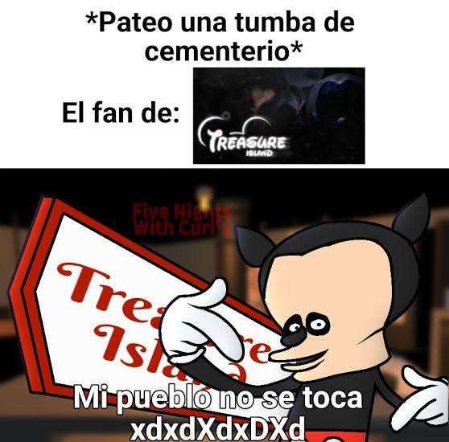

1. Terror Único
Inspirado en el creepypasta "Abandonados por Disney", FNATI destaca por su ambientación perturbadora. Mecánicas como apagar cámaras o la luz generan una paranoia constante.
Análisis y Peticion: FNATI para Android
Five Nights at Treasure Island (FNATI) es uno de los fangames de FNAF más icónicos de la historia. Este portal examina el valor de su diseño y la justificación técnica de por qué Radiance Team debería aprobar y desarrollar un port oficial optimizado para Android.
Análisis estructurado en tres ejes fundamentales:
Inspirado en el creepypasta "Abandonados por Disney", FNATI destaca por su ambientación perturbadora. Mecánicas como apagar cámaras o la luz generan una paranoia constante.
El sistema de juego basado en clickear paneles y monitores se presta idealmente para una pantalla táctil. La Noche 6 o la Custom Night serían muy fluidas de jugar en celular.
Gran parte de la comunidad consume contenido en Android. Un port oficial evitaría versiones no autorizadas de mala calidad y expandiría el alcance del juego.
